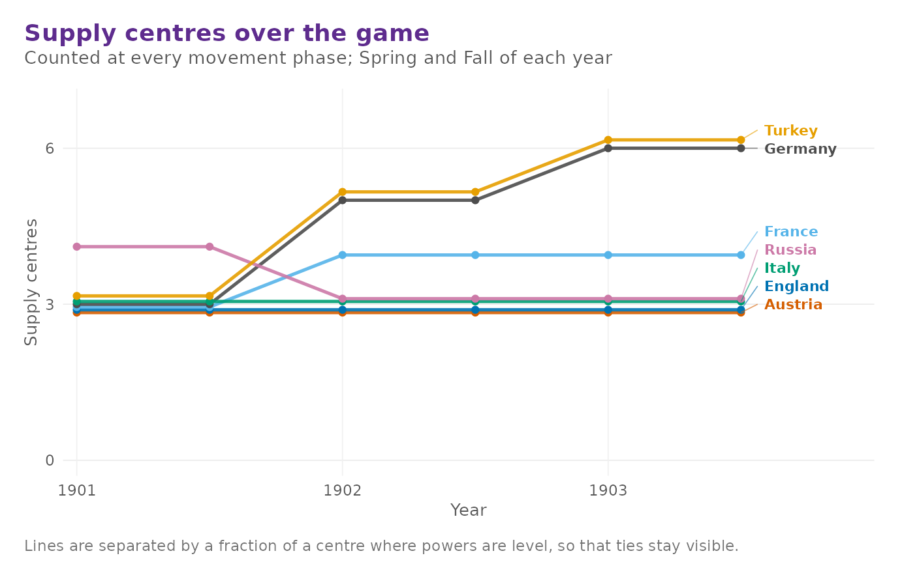
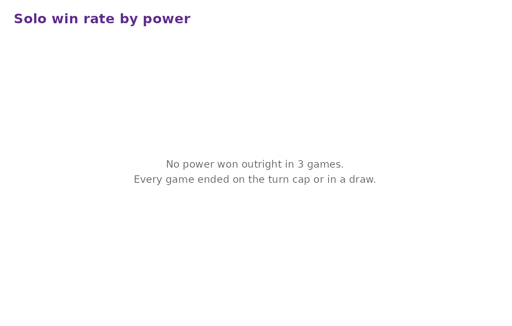
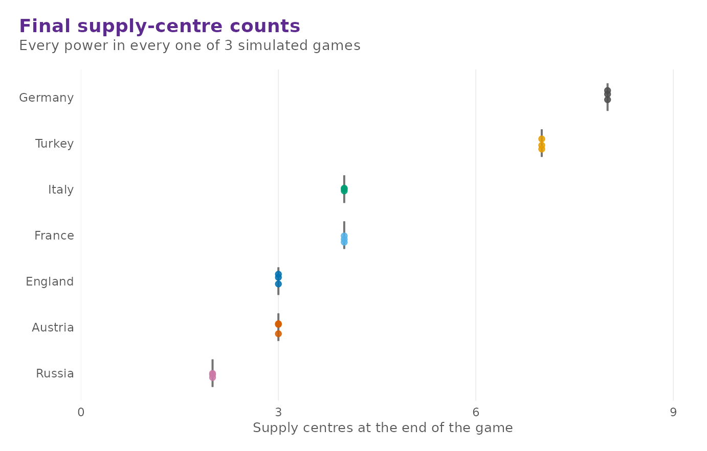
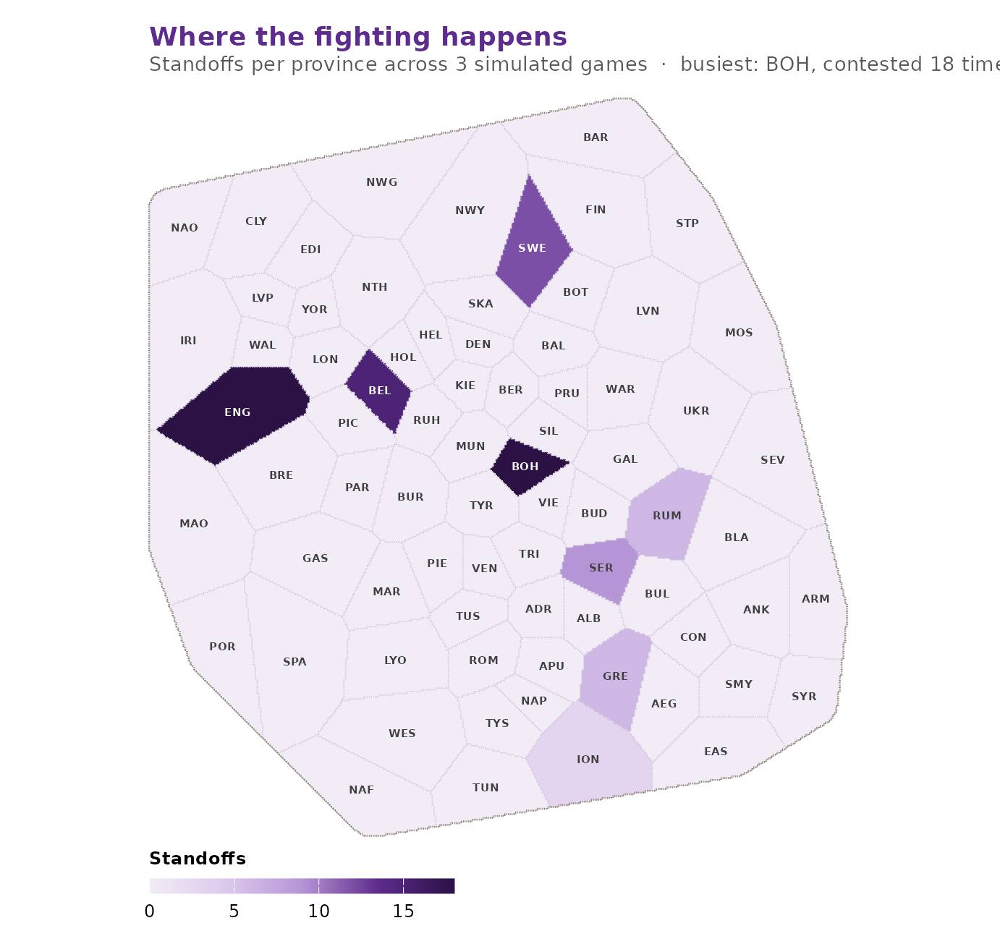

Diplomacy is a negotiation game, and no program plays it well. The bots in this package are not an attempt to change that. They exist so that a position can be played forward without a table of seven people, so that a rules change or a map variant can be exercised over thousands of turns, and so that questions about the board itself — which provinces get fought over, how long games run, whether the map is balanced — can be answered with data rather than assertion.
Legal orders come first
Every bot picks its orders out of dp_legal_orders(),
which enumerates exactly the orders the rules permit in the current
phase. A bot therefore cannot emit an illegal order, whatever else it
gets wrong.
game <- dp_new_game()
legal <- dp_legal_orders(game, "Italy")
table(legal$type)
#>
#> hold move support
#> 3 14 21
head(legal, 4)
#> <dp_orders> (4 orders)
#> Italy: F Nap H
#> Italy: F Nap - Apu
#> Italy: F Nap - Ion
#> Italy: F Nap - RomThe enumeration is exhaustive, convoyed moves included, so it is also the right thing to hand to a user interface that wants to offer a menu — which is precisely what the bundled shiny order editor does.
The four bots
dp_ai_orders() produces a complete order set for one
power.
"hold" is the passive baseline. Every
unit holds; forced to act, it retreats to the first open province,
builds armies at home, and lets the civil-disorder rule choose its
disbands.
dp_ai_orders(game, "Italy", bot = "hold")
#> <dp_orders> (3 orders)
#> Italy: F Nap H
#> Italy: A Rom H
#> Italy: A Ven H"random" picks uniformly among each
unit’s legal orders. It is the baseline any other strategy has to beat,
and it is the useful one for stress-testing the engine, because it
generates positions no human would ever write.
set.seed(42)
dp_ai_orders(game, "Turkey", bot = "random")
#> <dp_orders> (3 orders)
#> Turkey: F Ank - Arm
#> Turkey: A Con S A Smy
#> Turkey: A Smy S A Con - Ank"greedy" walks each unit towards the
nearest supply centre it does not already own, refuses to send two of
its own units to the same province, and then converts the units with
nothing better to do into support for its own attacks. It plays a
recognisable, if crude, opening.
dp_ai_orders(game, "France", bot = "greedy")
#> <dp_orders> (3 orders)
#> France: F Bre - Eng
#> France: A Mar - Spa
#> France: A Par - Bur"negotiator" is greedy play plus a
crude substitute for diplomacy: it treats the board leader as the common
enemy and leaves the weakest power alone. There is no negotiation
protocol in the package, so this is a stand-in for the part of the game
a program cannot play. It is marked experimental for that reason.
dp_ai_orders(game, "Russia", bot = "negotiator")
#> <dp_orders> (4 orders)
#> Russia: A War - Gal
#> Russia: A Mos - Ukr
#> Russia: F Sev - Rum
#> Russia: F Stp/sc - Botdp_ai_all() does all seven powers at once, and takes
either one bot name for everybody or a named vector mapping powers to
bots.
set.seed(3)
orders <- dp_ai_all(game, bots = c(France = "greedy", England = "random"))
orders[orders$power %in% c("England", "France"), ]
#> <dp_orders> (6 orders)
#> England: F Edi - Cly
#> England: F Lon S A Lvp - Yor
#> England: A Lvp S F Edi - Yor
#> France: F Bre - Eng
#> France: A Mar - Spa
#> France: A Par - BurPowers not named in the vector fall back to the greedy bot.
Playing a game out
dp_step() resolves one phase; any power you do not
supply orders for is played by bots.
dp_step(game, bots = "greedy")
#> <dp_game> Fall 1901 (movement phase)
#> Russia 4 centres 4 units
#> Austria 3 centres 3 units
#> England 3 centres 3 units
#> France 3 centres 3 units
#> Germany 3 centres 3 units
#> Italy 3 centres 3 units
#> Turkey 3 centres 3 unitsdp_play() repeats that until someone controls 18
centres, until only one power is left, or until the turn cap. It returns
a dp_history recording every turn.
history <- dp_play(bots = "greedy", max_years = 3, seed = 2024)
history
#> <dp_history> (11 turns)
#> • From Spring 1901 to Winter 1903
#> • Outcome: "draw"Three years is a very short game — the cap is there to keep this vignette quick — so the outcome is a draw. The history is the interesting part.
head(as_tibble(history), 4)
#> # A tibble: 4 × 7
#> turn season year phase power centres units
#> <int> <chr> <int> <chr> <chr> <int> <int>
#> 1 1 Spring 1901 movement Russia 4 4
#> 2 1 Spring 1901 movement Austria 3 3
#> 3 1 Spring 1901 movement England 3 3
#> 4 1 Spring 1901 movement France 3 3dp_power_summary() reduces a history to one row per
power, with the peak each power reached as well as where it
finished.
dp_power_summary(history)
#> # A tibble: 7 × 6
#> power turns start_centres final_centres peak_centres mean_centres
#> <chr> <int> <int> <int> <int> <dbl>
#> 1 Germany 11 3 8 8 5.27
#> 2 Turkey 11 3 7 7 5.18
#> 3 France 11 3 4 4 3.82
#> 4 Italy 11 3 4 4 3.09
#> 5 Austria 11 3 3 3 3
#> 6 England 11 3 3 3 3
#> 7 Russia 11 4 2 4 3.09dp_sc_trajectory() gives the same data restricted to
movement phases, which is the natural series to plot, and
dp_plot_sc_history() plots it. The dashed line is the 18
centres a solo victory needs.
dp_plot_sc_history(history)
Batch simulation
dp_simulate() plays many games and collects the
outcomes. It is the slow function in the package — a full-length game is
several hundred adjudications — so keep n and
max_years modest while you are exploring, and pass
verbose = FALSE when you do not want a line per game.
sim <- dp_simulate(
n = 3, bots = "greedy", max_years = 3, seed = 7, verbose = FALSE
)
sim
#> <dp_sim> (3 games)
#> draw 3 (100%)
#> • Bots: "greedy"
#> • Turn cap: 3 yearsThe dp_sim object holds a per-game outcome table, final
centre and unit counts for every power in every game, and a tally of
contested provinces.
sim$games
#> # A tibble: 3 × 5
#> game outcome winner years turns
#> <int> <chr> <chr> <int> <int>
#> 1 1 draw NA 4 11
#> 2 2 draw NA 4 11
#> 3 3 draw NA 4 11dp_stats() summarises it three ways.
"power" is one row per power:
dp_stats(sim, "power")
#> # A tibble: 7 × 7
#> power games solos win_rate survival_rate mean_centres max_centres
#> <chr> <int> <int> <dbl> <dbl> <dbl> <int>
#> 1 Germany 3 0 0 1 8 8
#> 2 Turkey 3 0 0 1 7 7
#> 3 France 3 0 0 1 4 4
#> 4 Italy 3 0 0 1 4 4
#> 5 Austria 3 0 0 1 3 3
#> 6 England 3 0 0 1 3 3
#> 7 Russia 3 0 0 1 2 2"outcome" is the split between solo victories and draws,
and "length" the distribution of game lengths:
dp_stats(sim, "outcome")
#> # A tibble: 1 × 3
#> outcome games share
#> <chr> <int> <dbl>
#> 1 draw 3 1
dp_stats(sim, "length")
#> # A tibble: 1 × 3
#> years games share
#> <int> <int> <dbl>
#> 1 4 3 1Every game here ran into the turn cap, so both tables have a single row. Over a real run at the default cap of twenty years they are the two summaries you actually want.
summary() on a simulation is
dp_stats(sim, "power"), and dp_power_summary()
works on games, histories and simulations alike.
Analysis plots
Three plot functions take a dp_sim directly. All of them
return ggplot2 objects, so they can be themed, faceted
or combined like any other plot.
dp_plot_winrates() charts solo victories by power. Over
a short run like this one there are none to chart — a solo needs far
more than three years — but over a long run this is the balance question
in one picture.
dp_plot_winrates(sim)
dp_plot_centres() shows the distribution of final
supply-centre counts, which says more than the win rate does when most
games end in a draw.
dp_plot_centres(sim)
dp_plot_supply_heatmap() puts the standoff tally back on
the board, shading each province by how often a move bounced there. With
three short games there is almost nothing to see; the point of the chart
is the pattern that emerges over hundreds.

Building your own bot
There is no plug-in mechanism, and there does not need to be one. A
bot is any function that takes a game and a power and returns a
dp_orders tibble; dp_legal_orders() gives you
the candidate set, and dp_bind_orders() assembles the
answer. Here is one that holds on supply centres it already owns and
otherwise moves at random:
dig_in <- function(game, power) {
legal <- dp_legal_orders(game, power)
mine <- names(game$sc_owner)[game$sc_owner == power]
on_sc <- legal$loc %in% mine & legal$type == "hold"
score <- ifelse(on_sc, 2, runif(nrow(legal)))
keep <- vapply(split(seq_len(nrow(legal)), legal$loc),
function(i) i[which.max(score[i])], integer(1))
legal[sort(keep), ]
}On the opening position it would simply hold everything, because every unit starts on a centre its own power owns. A mid-game position gives it something to do:
mid <- dp_example_game("midgame")
set.seed(1)
dig_in(mid, "Russia")
#> <dp_orders> (4 orders)
#> Russia: A War H
#> Russia: A Ukr - Rum
#> Russia: F Sev H
#> Russia: F Swe HWarsaw, Sevastopol and Sweden are Russian centres and sit tight; the army in Ukraine, which is on no centre at all, is left to the coin toss.
Feed the result to dp_adjudicate() or
dp_step() exactly like any other order set.
set.seed(1)
dp_step(mid, orders = dig_in(mid, "Russia"), bots = "greedy")
#> <dp_game> Winter 1903 (build phase)
#> Germany 6 centres 3 units
#> England 5 centres 3 units
#> France 5 centres 3 units
#> Russia 5 centres 4 units
#> Turkey 5 centres 3 units
#> Austria 4 centres 3 units
#> Italy 4 centres 3 units